Partial Engine Assembly (2AZ-FE) Removal |
| 1. Fuel Spill Prevention Procedure |
)| 2. Check Front Wheels Straight-ahead Position |
| 3. Disconnect Battery Negative Terminal |
| 4. Remove Front Tire |
| 5. Remove Engine Under Cover NO.1 |
Remove the 6 bolts and 7 clips, and remove the engine under cover No.1.
| 6. Remove Engine Under Cover |
Remove the 4 bolts and 4 screws, and remove the engine under cover.
| 7. Remove Engine Under Cover NO.2 |
Remove the 5 clips and engine under cover No.2.
| 8. Remove Engine Under Cover Rear LH |
Remove the 5 clips and the engine under cover rear LH.
| 9. Remove Engine Under Cover Rear RH |
| 10. Remove Radiator Upper Air Deflector |
Remove the 8 clips and the radiator upper air deflector.
| 11. Drain Engine Oil |
Remove the drain plug and drain the engine oil.
After draining the oil, install the drain plug with a new gasket.
| 12. Drain Coolant (Toyota Genuine Super Long Life Coolant) |
Loosen the radiator drain cock plug.
Remove the radiator cap and drain the coolant.
Loosen the cylinder block drain cock plug and drain the coolant from the engine.
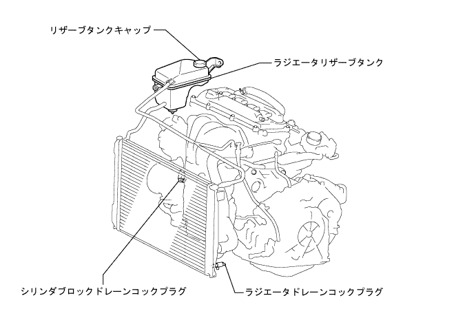
| 13. Drain CVT Fluid |
Using a socket hexagon wrench 10, remove the drain plug and gasket, and drain the fluid.
Using a socket hexagon wrench 10, tighten the drain plug with a new gasket.
| 14. Drain Transfer Oil (Drive Type 4WD) |
 |
Using straight hexagon 10mm and an offset wrench (10X12 long), remove transfer case plug No.2 (filler plug) and the gasket.
Using socket hexagon 10mm, remove the transfer drain plug and gasket, and drain the transfer oil.
Install the drain plug with a new gasket.
| 15. Remove Battery |
 |
Loosen the nut and disconnect the battery positive terminal. (*1)
Remove the bolt and nut, and remove the battery clamp.
 |
Disconnect the current sensor connector.
Remove the insulator.
Remove the battery.
| 16. Remove Engine Cover Sub-assembly NO.1 |
 |
Remove the 2 nuts and engine cover assembly No.1.
| 17. Remove Air Cleaner Cap w/ Air Cleaner Hose |
Disconnect the ventilation hose.
 |
Disconnect the vacuum switching valve connector and clamp, and disconnect the wire harness.
Disconnect the fuel vapor feed hose and fuel vapor feed hose No.2.
 |
Disconnect the intake air flow meter connector and clamp, and disconnect the wire harness from the air cleaner cap.
 |
Lock air cleaner hose clamp No.1.
With the clamp locked, remove the air cleaner cap w/ air cleaner hose.
| 18. Remove Air Cleaner Case |
Remove the air cleaner filter element.
 |
Remove the 3 bolts and clamp, and remove the air cleaner case.
| 19. Remove Battery Carrier |
 |
Remove the battery tray.
Detach the 2 clamps and disconnect the wire harness from the battery carrier.
Remove the 4 bolts and battery carrier.
| 20. Remove Battery Carrier NO.2 |
 |
Remove the 2 bolts and battery carrier No.2.
| 21. Remove Fan & Alternator V Belt |
 |
Using SST, slowly turn the V-belt tensioner clockwise.
Remove the V-belt from each pulley and slowly return the tensioner.
| 22. Remove Alternator Assembly |
 |
Disconnect the connector.
Remove the terminal cap.
Remove the nut and disconnect the harness from the +B terminal.
Remove the bolt and disconnect the clamp bracket.
Disconnect the harness clamp.
 |
Remove the 2 bolts and the Alternator assembly.
| 23. Disconnect Radiator Outlet Hose |
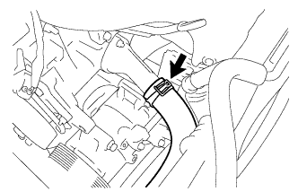 |
Slide the clamp and disconnect the radiator outlet hose.
| 24. Disconnect Radiator Inlet Hose |
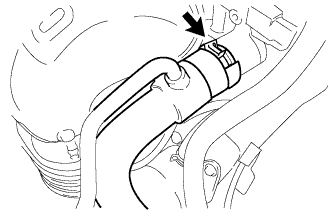 |
Slide the clamp and disconnect the radiator inlet hose.
| 25. Disconnect Heater Water Outlet Hose |
 |
Slide the clamp and disconnect the heater outlet water hose.
| 26. Disconnect Heater Water Inlet Hose A |
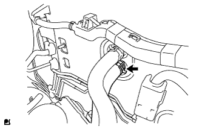 |
Slide the clamp and disconnect heater water inlet hose A.
| 27. Disconnect Check Valve to Connector Tube Hose |
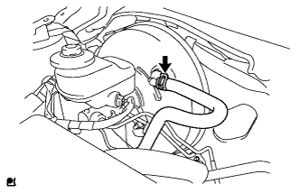 |
Slide the clamp and disconnect the check valve to connector tube hose.
| 28. Disconnect Transmission Control Cable Assembly |
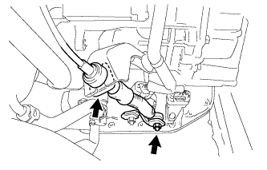 |
Remove the nut and clip, and disconnect the transmission control cable.
 |
Remove the clamp and disconnect the transmission control cable.
 |
Remove the bolt and disconnect the transmission control cable support from the engine mounting insulator RR.
| 29. Disconnect Engine Wire |
 |
Remove the clamp, raise the lock lever and disconnect the engine control computer connector.
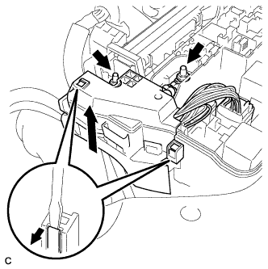 |
Remove the 2 nuts from the engine room junction block, disconnect the 2 connectors and 2 clamps, and disconnect the wire harness.
 |
Remove the bolt and clamp, and disconnect the ground wire of the engine room wire harness.
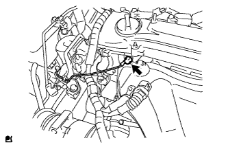 |
Remove the bolt and disconnect the ground wire of the engine room wire harness.
| 30. Disconnect Compressor Assembly (with Pulley) |
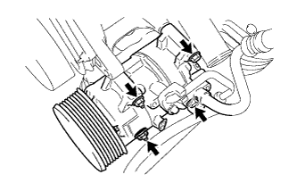 |
Disconnect the compressor assembly connector.
Remove the 2 bolts and 2 nuts.
Using a torx socket wrench (E8), remove the 2 stud bolts and disconnect the compressor assembly.
| 31. Disconnect Fuel Tube Sub-assembly |
 |
Disengage the claw and remove EFI fuel pipe clamp No.1.
 |
Pinch the retainer of the fuel tube connector from both sides with your fingers, pull out the fuel tube connector and disconnect the fuel tube from the pipe.
| 32. Remove Fuel Pipe Support |
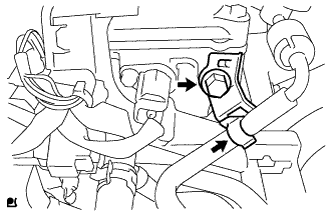 |
Remove the bolt and clamp, and remove the fuel pipe support.
| 33. Remove Exhaust Pipe Assembly Front |
 |
Disconnect the oxygen sensor connector.
 |
Remove the 2 bolts and disconnect the exhaust center pipe assembly.
 |
Remove the 2 bolts and 2 compression springs, and remove the exhaust pipe assembly FR.
Remove the 2 gaskets.
| 34. Remove Exhaust Pipe Assembly CTR (Drive Type 4WD) |
 |
Remove the 2 bolts and 2 compression springs.
Disconnect the 3 exhaust pipe supports and remove the exhaust center pipe assembly.
Remove the gasket.
| 35. Remove Front Floor Heat Insulator NO.2 (Drive Type 4WD) |
 |
Remove the 4 nuts and remove the front floor heat insulator No.2.
| 36. Remove Propeller Shaft with Center Bearing Assembly (Drive Type 4WD) |
 |
Remove the 2 bolts and center bearing washers, and disconnect the propeller with center bearing shaft assembly.
 |
Put matchmarks on the differential carrier assembly and propeller shaft assembly.
Remove the 4 nuts and 4 washers, and disconnect the propeller shaft assembly from the differential carrier assembly.
 |
Put matchmarks on the transfer assembly and propeller shaft assembly.
Remove the 4 nuts and 4 washers, and disconnect the propeller shaft assembly from the transfer assembly.
| 37. Remove Column Hole Cover Silencer Sheet |
 |
Turn back the floor carpet, remove the 2 clips, and remove the column hole cover silencer sheet.
| 38. Disconnect Steering Intermediate Shaft Assembly NO.2 |
 |
Remove the bolt from steering intermediate shaft assembly No.2.
Slide steering intermediate shaft assembly No.2 toward the steering column assembly until the serrations of the steering intermediate shaft are visible.
 |
Put matchmarks on steering intermediate shaft assembly No.2 and the steering intermediate shaft.
Disconnect steering intermediate shaft assembly No.2 from the steering intermediate shaft.
| 39. Disconnect Speed Sensor Front LH |
 |
Remove the 2 bolts and disconnect the speed sensor wire and flexible hose.
 |
Remove the bolt and disconnect the speed sensor front LH from the steering knuckle.
| 40. Disconnect Speed Sensor Front RH |
| 41. Remove Front Axle Shaft Nut LH |
 |
Set the SST aligned with the groove of the front drive shaft assembly LH, and using a hammer, unstake the front axle hub nut LH.
Using a socket wrench (30mm), remove the front axle hub nut LH.
| 42. Remove Front Axle Shaft Nut RH |
| 43. Disconnect Front Stabilizer Link Assembly LH |
 |
Remove the nut and disconnect the front stabilizer link assembly LH from the front shock absorber w/ coil spring.
| 44. Disconnect Front Stabilizer Link Assembly RH |
| 45. Disconnect Tie Rod End Sub-assembly LH |
Remove the cotter pin and castle nut.
 |
Using SST, disconnect the tie rod end LH from the steering knuckle.
| 46. Disconnect Tie Rod End Sub-assembly RH |
| 47. Disconnect Front Suspension Arm Sub-assembly Lower NO.1 LH |
 |
Remove the 1 bolts and 2 nuts.
Push down the front suspension lower arm No.1 LH and disconnect it from the front lower ball joint LH.
| 48. Disconnect Front Suspension Arm Sub-assembly Lower NO.1 RH |
| 49. Disconnect Front Axle Assembly LH |
 |
Using a plastic hammer, lightly tap the end of the front drive shaft assembly LH to disengage the front drive shaft assembly LH from the front axle assembly LH.
Push the front axle assembly LH toward the outside of the vehicle and pull the front drive shaft assembly LH out of the front axle assembly LH.
| 50. Disconnect Front Axle Assembly RH |
| 51. Remove Front Drive Shaft Assembly LH |
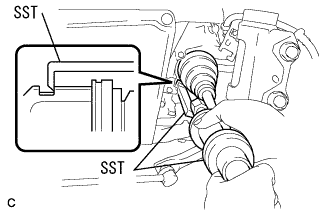 |
Using SST, remove the drive shaft assembly LH.
| 52. Remove Front Drive Shaft Assembly RH (Drive Type FF) |
 |
Remove the 2 bolts and drive shaft assembly RH from the bearing bracket.
| 53. Remove Front Drive Shaft Assembly RH (Drive Type 4WD) |
 |
Using a flat-tip screwdriver, compress the drive shaft bearing bracket hole snap ring and remove it from the bearing bracket.
Remove bearing bracket bolt No.1 and remove the front drive shaft assembly RH from the drive shaft bearing bracket.
| 54. Remove Flywheel Housing Under Cover |
 |
Remove the flywheel housing under cover.
| 55. Remove Drive Plate & Torque Converter Setting Bolt |
 |
Using SST, hold the crankshaft.
 |
Remove the 6 torque converter set bolts.
| 56. Remove Engine Front Mounting Bracket Reinforcement Lower |
 |
Remove the 2 bolts and the engine front mounting bracket reinforcement lower.
| 57. Remove Front Suspension Member Reinforcement LH |
 |
Remove the 4 bolts and the front suspension member reinforcement LH.
| 58. Remove Front Suspension Member Reinforcement RH |
 |
Remove the 4 bolts and remove the front suspension member reinforcement RH.
| 59. Remove Engine Assembly w/ Transaxle |
 |
Set the height-adjustable attachment and plate lift attachment, and set the engine lifter.
 |
Remove the bolt and 2 nuts, and disconnect the engine mounting insulator RH from the engine mounting bracket RH.
 |
Remove the bolt and nut, and disconnect the engine mounting insulator LH from the engine mounting bracket LH.
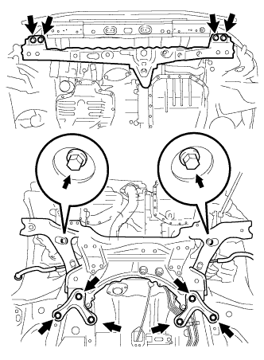 |
Remove the 12 bolts and operate the engine lifter to slowly remove the engine assembly w/ transaxle, front crossmember and front suspension crossmember from the vehicle.
| 60. Install Engine Hangers |
 |
Install engine hanger No.1 and engine hanger No.2 at the positions shown in the illustration.
Using an engine sling device and chain block, hold the engine assembly w/ transaxle, front crossmember and front suspension crossmember.
| 61. Remove Front Cross Member Sub-assembly |
 |
Remove the bolt and nut, and disconnect the engine mounting insulator FR w/ front crossmember from the engine mounting bracket FR.
| 62. Remove Front Suspension Crossmember Sub-assembly |
 |
Remove the bolt and disconnect the engine mounting insulator RR w/ front suspension crossmember from the engine mounting bracket RR.
| 63. Remove Engine Mounting Bracket Front |
 |
Remove the 3 bolts and the engine mounting bracket FR.
| 64. Remove Engine Mounting Bracket Rear |
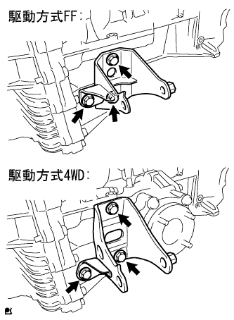 |
Remove the 3 bolts and the engine mounting bracket RR.
| 65. Remove Starter Assembly |
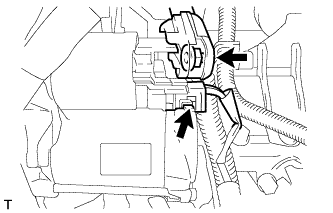 |
Disconnect the connector from the starter assembly.
Open the terminal cap cover.
Remove the nut and disconnect terminal B.
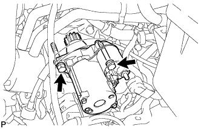 |
Remove the 2 bolts and the starter assembly.
| 66. Disconnect Engine Wire |
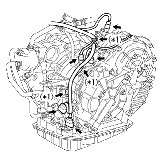 |
Disconnect the transmission wire connector, neutral start switch assembly connector, 3 transmission revolution sensor connectors and 3 clamps (*1).
 |
Disconnect the oil pressure sensor connector and 2 clamps.
| 67. Disconnect Water Bypass Hose |
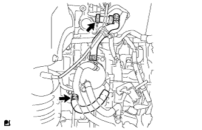 |
Remove the 2 clamps and disconnect the 2 water bypass hoses.
| 68. Remove Continuously Variable Transaxle Assembly |
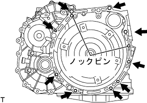 |
Remove the 9 bolts and the continuously variable transaxle.
| 69. Remove Drive Plate & Ring Gear Sub-assembly |
|
Using SST, hold the crankshaft.
 |
Remove the 8 bolts, and remove the drive plate spacer RR, drive plate & ring gear and drive plate spacer FR.
| 70. Set Engine Stand |
Install the engine assembly to the engine stand.
Remove the engine sling device and chain block from the engine assembly.
| 71. Remove Throttle Body Assembly |
 |
Disconnect the throttle body connector.
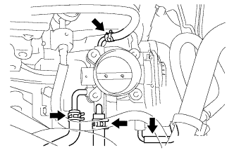 |
Disconnect the water bypass hose, water bypass hose No.2, throttle body hose and purge line hose.
 |
Remove the 4 bolts and remove the throttle body assembly.
 |
Remove the gasket from the intake manifold.
| 72. Remove Fuel Delivery Pipe w/ Injector |
|
Disconnect the throttle body connector.
 |
Disconnect the 4 injector connectors.
Disconnect the oil control valve connector. (*1)
Disengage the 3 clamps and disconnect the wire harness from the delivery pipe. (*2)
 |
Remove the 2 bolts and remove the fuel delivery pipe w/ injector.
 |
Remove the 2 spacers from the cylinder head.
Remove the 4 insulators from the cylinder head.
| 73. Remove Fuel Injector Assembly |
 |
Remove the fuel injectors from the fuel delivery pipe.
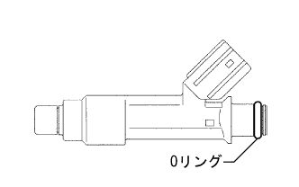 |
Remove the O-rings from the injectors.
| 74. Disconnect Ventilation Hose NO.2 |
 |
Slide the clamp and disconnect ventilation hose No.2.
| 75. Remove Intake Manifold |
 |
Disconnect the check valve to connector tube hose from the vacuum hose clamp. (*1)
Remove the 5 bolts and 2 nuts and remove the intake manifold. 。
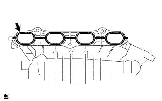 |
Remove the gasket from the intake manifold.
| 76. Remove Intake Manifold Insulator NO.1 |
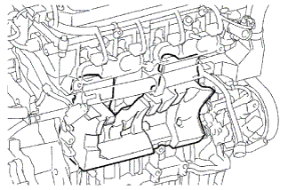 |
Remove intake manifold insulator No.1.
| 77. Remove Engine Wire |
| 78. Remove Drive Shaft Bearing Bracket |
 |
Remove the 3 bolts and the drive shaft bearing bracket.
| 79. Remove Oil Level Gauge Sub-assembly |
Remove the oil level gauge.
| 80. Remove Oil Level Gauge Guide |
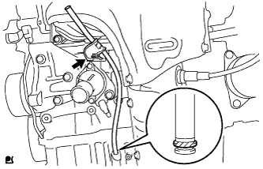 |
Remove the bolt and remove the oil level gauge guide.
Remove the O-ring from the oil level gauge guide.
| 81. Remove Exhaust Manifold Heat Insulator NO.1 |
 |
Remove the 4 bolts and remove the exhaust manifold heat insulator No.1.
| 82. Remove Manifold Stay |
 |
Remove the bolt and nut and remove the manifold stay.
| 83. Remove Manifold Stay NO.2 |
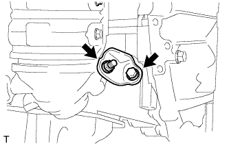 |
Remove the bolt and nut and remove manifold stay No.2.
| 84. Remove Exhaust Manifold Converter Sub-assembly |
 |
Remove the 5 nuts and remove the exhaust manifold converter.
Remove the exhaust manifold to head gasket from the cylinder head.
| 85. Remove Water Inlet |
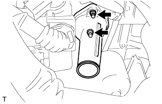 |
Remove the 2 nuts and disconnect the water inlet from the cylinder block.
| 86. Thermostat Removal |
Remove the thermostat and gasket.
| 87. Remove Water Bypass Pipe NO.1 |
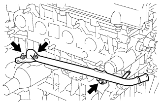 |
Remove the bolt and 2 nuts, and remove water bypass pipe No.1 and the gasket.
| 88. Remove Water Bypass Pipe NO.3 |
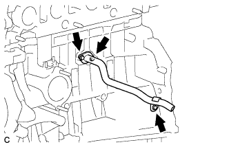 |
Remove the bolt and 2 nuts, and remove water bypass pipe No.3 and the gasket.
| 89. Remove Engine Mounting Bracket RH |
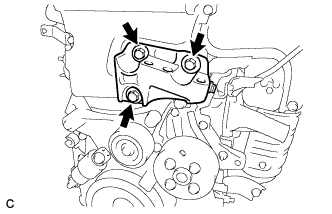 |
Remove the 3 bolts and remove the RH engine mounting insulator.
| 90. Remove Idler Pulley Bracket |
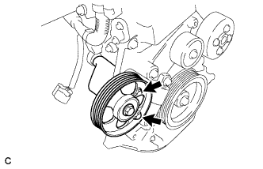 |
Remove the 2 bolts and remove the idler pulley bracket.
| 91. Remove V-ribbed Belt Tensioner Assembly |
 |
Remove the bolt and nut, and remove the V-belt tensioner assembly.
| 92. Remove Ignition Coil Assembly |
 |
Remove the 4 bolts and the 4 ignition coil assemblies.
| 93. Remove Camshaft Timing Oil Control Valve Assembly |
 |
Remove the bolt and remove the camshaft timing oil control valve assembly from the cylinder head.
| 94. Remove Knock Control Sensor |
Disconnect the knock control sensor connector.
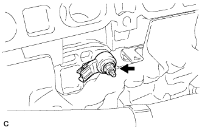 |
Remove the nut and remove the knock control sensor.
| 95. Remove Radio Setting Condenser |
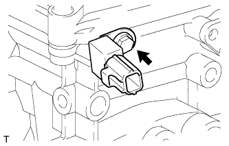 |
Remove the bolt and remove the radio setting condenser.
| 96. Remove Engine Oil Pressure Switch Assembly |
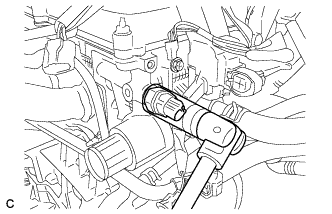 |
Using a deep socket wrench (24mm), remove the engine oil pressure switch.
| 97. Remove E.F.I. Water Temperature Sensor |
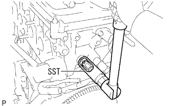 |
Using SST, remove the E.F.I. water temperature sensor and gasket.
| 98. Replace Partial Engine Assembly |